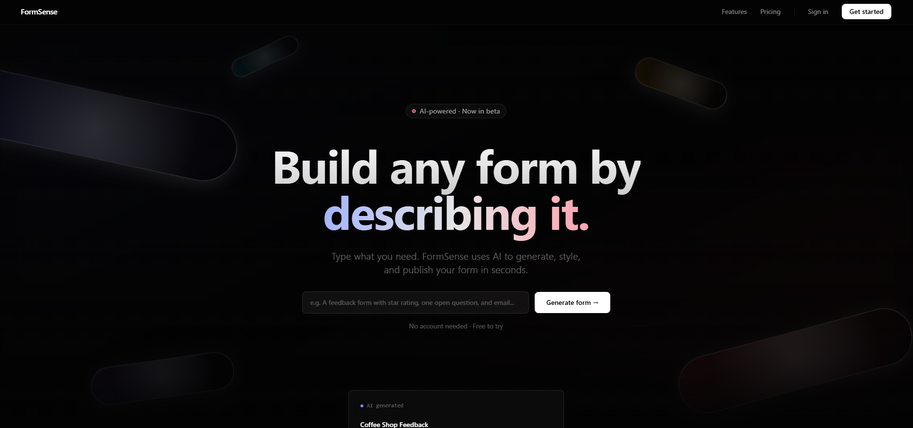
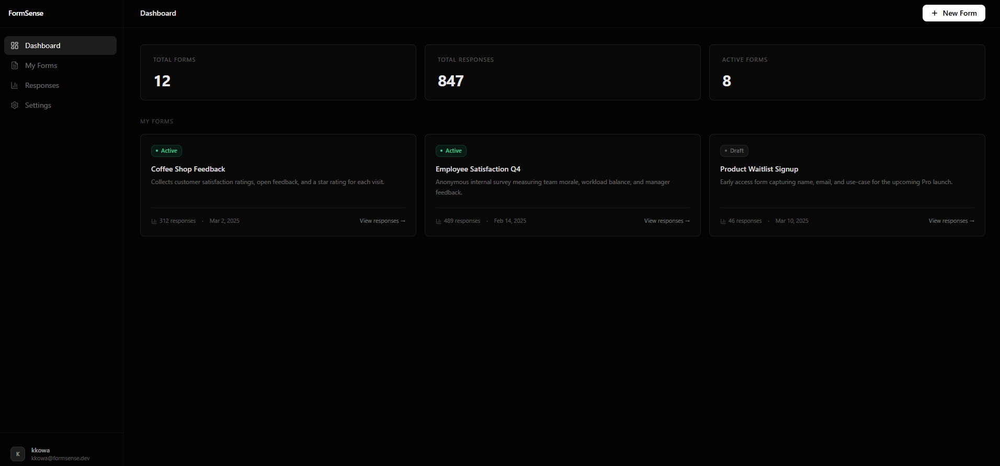
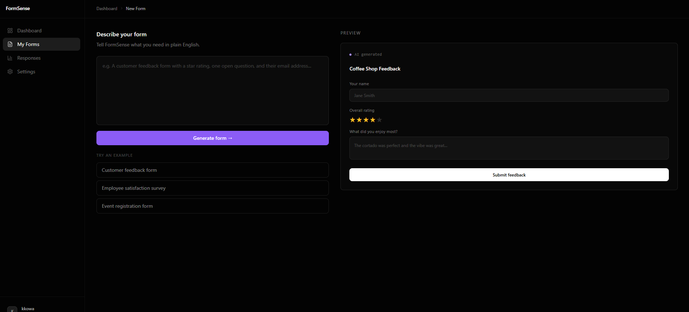
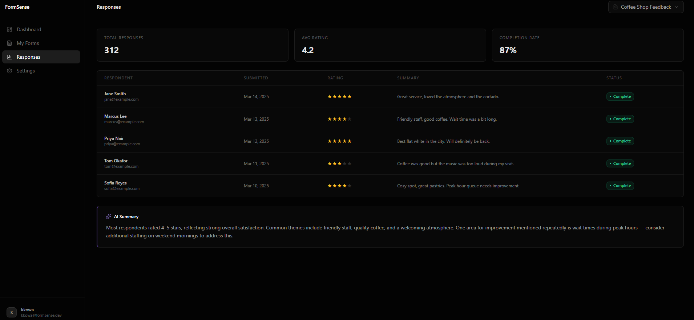
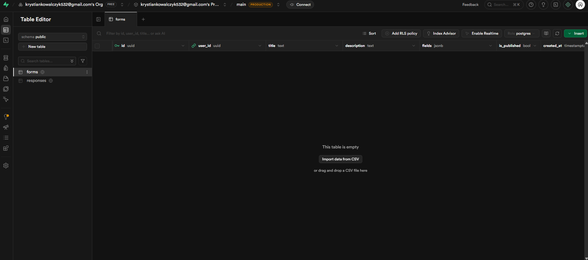

FormSense
An AI-powered form builder where users describe what they need in plain English and the AI generates a fully styled, live form instantly. Built as a design engineering project to explore natural language UI generation, real database architecture, and AI-first product thinking using Claude Code.
01 — the concept
replace the form builder with a single sentence
every form builder asks you to drag, drop, configure, and repeat. FormSense inverts that entirely. you type what you need: "a contact form with name, email, and a budget range", and the AI generates the full form: fields, labels, validation, and Tailwind styling, ready to publish.
the framing that shaped every decision was this: the AI loop is the product, not a feature. there's no legacy builder to fall back on. the natural language interface is the only interface. that constraint forced every design and engineering choice to serve the AI output, not sit alongside it.
the goal wasn't to automate form creation. it was to explore what a product looks like when the AI is the primary mode of interaction, and what that demands from the design and architecture underneath it.

02 — ai workflow
built entirely with Claude Code
the entire product was scaffolded using Claude Code. rather than writing boilerplate by hand, prompts were used to generate Next.js page structures, Tailwind component layouts, Supabase query hooks, and full UI sections in real time. iteration happened through conversation: design decisions, layout adjustments, and component refactors were all driven by prompts.
this wasn't just about speed. it was a deliberate way to stress-test agentic AI development as a production workflow: understanding where it excels (component generation, repetitive structure, typed schemas), where it needs guidance (product logic, edge cases, visual judgment), and how to write prompts that produce useful, maintainable output rather than throwaway code.



03 — database architecture
a real schema built for a real product
the database runs on Supabase Postgres with two core tables. the forms table stores the form definition: user ownership, title, a fields JSONB column for the dynamic field schema, and a is_published flag for controlling live availability. the responses table captures each submission, linking back to the form and storing answers as JSONB alongside a submitted_at timestamp.
auth is handled by Supabase's built-in email provider. no third-party auth library needed. row-level security policies ensure users can only read and write their own forms and responses. the JSONB columns were a deliberate choice: form fields are variable by nature, and a flexible schema lets the AI generate any field configuration without requiring a migration.
forms
id · user_id · title · fields (jsonb) · is_published
responses
id · form_id · answers (jsonb) · submitted_at
auth
Supabase email provider. row-level security policies scope all reads and writes to the authenticated user.
why JSONB
form fields are variable by design. JSONB lets the AI output any field schema: text, select, range, date, without a database migration for each new type.

04 — tech stack
chosen for speed, type safety, and AI compatibility
the stack was chosen to keep the feedback loop as tight as possible, between prompt, generated code, and working UI, while maintaining a real production-quality architecture throughout.
05 — what's next
the path to a fully live product
FormSense is a working proof of concept. the architecture is real, the UI is built, and the design patterns are established. the next phase wires it all together into a live, end-to-end product.
connect the Claude API
wire the form builder prompt input to the Claude API so that plain English descriptions generate real, structured field schemas, not placeholder data.
wire up Supabase auth
activate the full auth flow: sign up, sign in, session persistence, and row-level security, so users have a real account and private form workspace.
live form publishing
build the public-facing form URL. when a user hits publish, a live shareable link is generated and responses flow back into their dashboard in real time.
response analytics
visualise submission data directly in the dashboard: completion rates, field drop-off, and a simple answer summary for each published form.